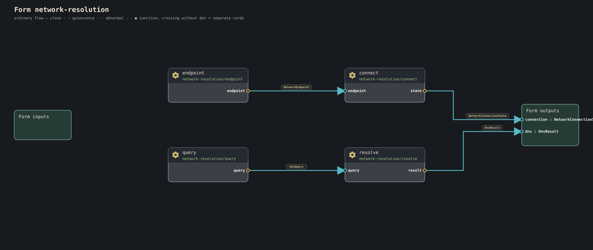

Journey 11 of 23
Conduit does not make networking disappear. It keeps network mechanism out of portable meaning until realization actually needs it.
Networking is not erased; it is put at the right altitude
“Location transparency” becomes dangerous when it turns failures, latency, authority, and transport limits into invisible surprises.
Conduit therefore does not promise that remote work behaves exactly like local work. It promises a cleaner distinction:
- the cord belongs to authored semantic composition;
- the line belongs to the exact realization chosen to carry that cord.
The semantic graph can stay stable while planning tells the truth about where carriage crosses a machine boundary.
cord versus line
A cord is a semantic connection between compatible ports.
A line is one finite connectivity realization that can carry a cord between hosts.
cord = meaning/composition
line = realized carriage
A form can therefore be written without naming WebSocket, USB, Bluetooth, WebRTC, a relay, or a local socket.
A network operation can still be semantic when networking is the point
Current tree:
form network-resolution (
connection: NetworkConnectionState >>
dns: DnsResult >>
) {
endpoint: net/deterministic-endpoint
query: net/deterministic-dns-query
connect: net/connect
resolve: net/resolve-dns
endpoint.endpoint >> connect.endpoint
query.query >> resolve.query
connect.state >> connection
resolve.result >> dns
}

Here connection and DNS meaning are themselves the subject of the form.
That is different from a portable button/indicator form whose cord merely happens to cross a network during realization.
Remote carriage does not grant membership
These facts remain separate:
reachable
authenticated
trusted
member of body
authorized for a capability
selected by a plan
Seeing a host does not admit it into a body. body membership does not grant every effect. A line does not mint authority.
Current line mechanisms
The development tree has evidence for bounded combinations of:
- local/loopback transport;
- WebSocket;
- USB CDC;
- protected relay;
- WebRTC DataChannel;
- attended serial candidates.
The shared rendezvous model can advertise multiple exact route candidates. Each host attempts only mechanisms it actually supports.
ConduitOS truthfully skipping WebRTC is better than pretending the transport exists for symmetry.
Failure and recovery
A disappearing line is an observation that may invalidate part of a realization.
There are two major recovery shapes.
Same-plan fallback
If the plan already admitted another exact route/provider:
Plan P
route A
route B
A lost
-> B selected under sealed fallback law
-> PlanId stays P
True replan
If current plan P can no longer satisfy the obligation:
loss observation
-> planning requested
-> fresh offers/resources/routes
-> Plan P2 or refusal
P remains immutable history.
Two Ollamas is the clean distributed stress test
The Two Ollamas vertical #4092 uses one semantic model request and two substitutable provider realizations to prove:
- exact host/boot/provider selection;
- same-plan fallback;
- true replacement planning;
- replay/movement legality derived from checked meaning;
- causal evidence explaining what changed;
- no Ollama-specific scheduler law.
Provider URLs, HTTP framing, credentials, and model vendor identity remain below the portable LLM fore.
Desk Telegraph shows the communication waist
Current tree:
form bounded-record-send (
maximum-items: Count = 4
maximum-frame-bytes: Count = 4096
frame: FramedTypedRecord >> queued: FramedTypedRecord
) {
queue: record/ordered-send-queue(maximum-items, maximum-frame-bytes)
frame >> queue >> queued
}
The queue has explicit finite pressure. Later remote carriage can be added without turning transport into the meaning of typed records.
No hidden retry
Retry is a semantic promise.
A host, base, or line cannot quietly retry effectful work because "networks are flaky." Replay/movement eligibility derives from the checked work. If an external effect may already have committed, Conduit needs a real idempotency/transaction/replay law, not optimism.
Causality should be explainable
Good distributed evidence answers:
- what became unavailable?
- which exact observation established that?
- was fallback already admitted?
- did PlanId change?
- was work replayed or moved?
- why was that legal?
- did semantic work continue?
- if not, what exact terminal truth escaped?
Timestamps alone are not causality.